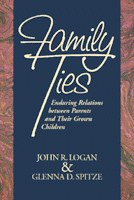

A challenging look at the way relationships between parents and their adult children remain strong in the midst of social change
A challenging look at the way relationships between parents and their adult children remain strong in the midst of social change


 A challenging look at the way relationships between parents and their adult children remain strong in the midst of social change
A challenging look at the way relationships between parents and their adult children remain strong in the midst of social change

|  |
Family TiesEnduring Relations between Parents and Their Grown ChildrenJohn R. Logan and Glenna D. Spitzepaper EAN: 978-1-56639-472-7 (ISBN: 1-56639-472-4) |
William J. Goode Distinguished Book Award, Sponsored by the Family Section of the American Sociological Association, 1997
Critics voice alarm about the deterioration of the American family. Studies are consistently grim, citing diminishing family size, changing gender roles, the rising incidence of divorce, and even the longer life spans of today's older generation as factors that challenge the ability of the family to adequately support the older generation.
While many studies focus on the impact of social change on younger generations, Family Ties deals comprehensively with family relationships over a longer period of the life cycle and reveals misconceptions about grown children caring for their aging parents. Glenna D. Spitze and John R. Logan offer conclusive evidence that relationships between parents and their adult children remain intact and challenge other myths of isolation and neglect of the older generation.
The authors reveal that parents are not dependent on help from their grown children, as was previously assumed; in fact they contribute more assistance than they receive up until the age of seventy-five. Also, while daughters are still the dominant caregivers, other forms of support like visiting and providing transportation are provided almost equally by sons and daughters.
Logan and Spitze also report that even though the day-to-day demands on adult children have increased with the changing economy, very few seem to be torn between these responsibilities and those of caring for their parents. This book offers reassuring news about the strength of the American family in the midst of social change. Family Ties will be a valuable resource for anyone interested in intergenerational relationships in adulthood.
"...Logan and Spitze do not lose sight of important framing questions.... It is an admirably lucid analysis... that can serve both as a model in graduate teaching and as a source for more nuanced formations of social policy."
—Contemporary Sociology
Tables and Figures
Acknowledgments
Preface: Aging Parents, Changing Families
1. Generational Boundaries with Russell A. Ward
2. Which is the Dependent Generation? with Russell A. Ward
3. Family Composition and intergenerational Ties
4. Intergenerational Effects of Employment and Divorce
5. Role Conflicts for the Generation in the Middle
6. The Family in Social Networks
7. Extending the Family
Appendix A: The Albany Survey
Appendix B:Questionaire
Appendix C: Tables
References
Author Index
Subject Index
 | John R. Logan is Professor of Sociology and Public Policy at the State University of New York at Albany. He is co-author of Urban Fortunes: The Political Economy of Place and co-editor of Beyond the City Limits: Urban Policy and Economic Restructuring in Comparative Perspective (Temple). |
 | Glenna D. Spitze is Professor of Sociology and Women's Studies at the State University of New York at Albany. She is author of Sex Stratification: Children, Housework, and Jobs and co-editor of Ingredients for Women's Employment Policy. |
© 2015 Temple University. All Rights Reserved. This page: http://www.temple.edu/tempress/titles/1293_reg.html.